Mobil uygulamamızın sunucuyla iletişim kuracağı 20 endpoint'lik API'yi kurdum ve Swagger ile belgeledim. Şu an sahte verilerle uçtan uca çalışıyor; ekip arkadaşlarım kendi parçalarını hazır bıraktığım yerlere takarak gerçeğe çevirecek.
Ekibimiz havacılık standartları üzerine çalışan bir mobil uygulama geliştiriyor. Mobil uygulamanın ekranları kendi başına bilgi üretemez; verileri bir sunucudan ister. Sunucunun dışarıya sunduğu, hangi isteğe hangi cevabı vereceği önceden tanımlanmış istek noktalarının tamamına API (Application Programming Interface) denir.
Benim görevim bu API'nin iskeletini kurmaktı:
İskelet, API'nin tüm sözleşmesini (adresler, istek/cevap formatları, hata kuralları) bugünden sabitler. Gerçek bileşenler hazır oldukça mock'ların yerini alır; mobil uygulamanın gördüğü format değişmez.
Problem. Havacılık ve savunmada bir ürün (telsiz, radar, uçuş yazılımı) teslim edilmeden önce standartlara uyduğunu kanıtlamak zorundadır. Bu standartlar çok büyüktür (MIL-STD-810H yaklaşık 1000 sayfa), İngilizcedir ve birbirine atıf yapar. Gözden kaçan tek bir madde test tekrarına, gecikmeye ya da sertifika reddine yol açabilir.
| Özellik | Kullanıcı ne yapar? | Sistem ne döndürür? |
|---|---|---|
| Standart asistanı | Doğal dille soru sorar: "Vibrasyon testi kaç saat sürmeli?" | Türkçe cevap + kaynak (standart, madde, sayfa) |
| Uyumluluk ön kontrolü | Kendi test raporunu yükler | Karar (Uyumlu / Kısmen Uyumlu / Uyumsuz / Yetersiz Bilgi), gerekçe, güven skoru |
| Kod | Konusu |
|---|---|
| MIL-STD-810H | Çevresel testler: sıcaklık, nem, titreşim, şok |
| MIL-STD-461G | Elektromanyetik uyumluluk (cihazların birbirini bozmaması) |
| DO-178C | Uçuş yazılımı sertifikasyonu |
RAG nedir? Cevaplar RAG (Retrieval-Augmented Generation, "bulup okuyarak cevap üretme") ile üretilir. Sistem önce soruyla ilgili standart parçalarını bulur, sonra yapay zekâya "sadece bu parçalara dayanarak cevap ver ve kaynak göster" der. Model genel bilgisinden değil, bulunan parçalardan cevap ürettiği için her cevapta kaynak (standart, madde, sayfa) gösterilebilir.
Platform bir asistandır, resmi onay mercii değildir. Kaynak gösterimi bu yüzden zorunludur.
| Teknoloji | Ne işe yarıyor? |
|---|---|
| Python 3.14 | Projenin programlama dili |
| FastAPI 0.162 | API'yi yazdığımız çatı (framework). Endpoint'leri tanımlar, gelen isteği doğrular, Swagger'ı otomatik üretir |
| Pydantic 2.14 | İstek ve cevapların şablonunu (şema) tanımlar; hatalı veriyi servise ulaşmadan reddeder |
| Swagger / OpenAPI | API'nin otomatik, tıklanabilir kullanım kılavuzu (/docs). Mobil ekibin ana dokümanı |
| Uvicorn 0.54 | API'yi çalıştıran sunucu programı |
| pydantic-settings 2.16 | Ayarları (.env) güvenli ve tek yerden okur |
| python-multipart | PDF yüklemeyi (dosya gönderimini) mümkün kılar |
| Loguru 0.7 | Sunucu günlüğü (log): ne oldu, ne zaman oldu |
| pytest 9.1 + httpx | Otomatik testler: 652 test her değişiklikte tek komutla çalışır |
| Playwright 1.64 | Bu rapordaki Swagger ekran görüntülerini ve PDF'i otomatik üretir |
Bu hafta bilerek olmayanlar: Veritabanı (Doruk), vektör arama (Sudenur), Gemini yapay zekâsı. Hepsinin yerinde şimdilik bellek-içi sahte bir parça çalışıyor.
Kod dört katmana ayrıldı (Clean Architecture). Her katmanın tek bir sorumluluğu var ve bağımlılık hep içe doğru.
src/api/src/application/src/domain/src/infrastructure/src/core/
Ayarlar, tek tip hata yönetimi, bileşen seçim dosyası deps.py.
Her katman yalnızca bir alttakinin arayüzünü bilir. Bu sayede bir implementasyon (ör. mock arama yerine hibrit arama) değiştiğinde iş kuralları ve API katmanı etkilenmez; her katman ayrı test edilebilir.
Mobil uygulamada "Vibrasyon testi kaç saat sürmeli?" yazıldığında:
POST /api/v1/chat/ask isteği gönderilir: {"question": "Vibrasyon testi kaç saat sürmeli?"}422 döner, servise hiç gidilmez[DEMO] ile başlarANSWERED) gelirÜç olası durum (hepsi 200, mobil status alanına bakar):
ANSWEREDNO_RESULTSanswer boş (null), yapay zekâ hiç çağrılmaz.LLM_UNAVAILABLESwagger'da 5 grup altında. Kilit simgeli uçlar giriş ister (bu hafta otomatik demo kullanıcı ile açık).
| Yöntem | Adres | Görevi |
|---|---|---|
| System | ||
| GET | / | Uygulama bilgisi (ad, sürüm, doküman adresi) |
| GET | /health | Sağlık kontrolü: sunucu ayakta mı, hangi arama/yapay zekâ takılı |
| GET | /api/v1/meta/enums | Açılır listeler için seçenekler ve sınırlar (ör. "Kısmen Uyumlu" etiketi) |
| Auth (Taha'nın modülünün şu anki şekli) | ||
| POST | /auth/register | Kayıt ol |
| POST | /auth/login | Giriş yap, token al |
| POST | /auth/refresh | Süresi dolan token'ı yenile |
| GET | /auth/me | Giriş yapmış kullanıcının bilgisi |
| Standards | ||
| GET | /api/v1/standards | Standartları listele (arama, filtre, sayfalama) |
| POST | /api/v1/standards | Yeni standart ekle (yönetici) |
| GET | /api/v1/standards/{standard_id} | Standart detayı |
| POST | /api/v1/standards/{standard_id}/document | Standardın PDF'ini yükle; arka planda indekslenir (yönetici) |
| GET | /api/v1/standards/{standard_id}/index-status | İndeksleme ne durumda? (PENDING → PROCESSING → INDEXED) |
| Search & Chat | ||
| POST | /api/v1/search | Standartlarda ara (yapay zekâsız ham sonuçlar) |
| POST | /api/v1/chat/ask | Soru sor, kaynaklı cevap al |
| GET | /api/v1/chat/conversations | Sohbetlerim |
| GET | /api/v1/chat/conversations/{conversation_id} | Bir sohbetin tüm mesajları |
| Reports | ||
| POST | /api/v1/reports | Rapor (PDF) yükle; arka planda işlenir |
| GET | /api/v1/reports | Raporlarım |
| GET | /api/v1/reports/{report_id} | Rapor detayı ve durumu (UPLOADED → PROCESSING → READY) |
| POST | /api/v1/reports/{report_id}/analyses | Raporu standarda göre uyumluluk analizinden geçir |
Auth uçları Taha'nın modülünün şu anki halini gösterir (/auth/*). Birleştirmede tek satırla
/api/v1/auth/* altına alınacak ve cevaba kullanıcı rolü eklenecek; mobil için kırıcı bir değişiklik değildir.
Her dış bileşen bir arayüzün (interface) arkasında. Hangi parçanın takılı olduğu tek bir dosyada seçiliyor:
src/core/deps.py. Kodda her kişinin yeri TODO(İsim) ile işaretli.
| Kişi | Görevi | İskeletteki yeri | Bugün takılı olan |
|---|---|---|---|
| Taha | Kayıt/giriş, JWT | src/core/security.py, auth_service.py, get_current_user | Sahte token, demo kullanıcı |
| Doruk | PostgreSQL veritabanı | Depo arayüzleri (src/domain/interfaces.py) | Bellek-içi depolar + örnek veri |
| Sudenur | Madde bazlı parçalama, hibrit arama | SearchService arayüzü | mock_search.py (sabit parça kataloğu) |
| Onur | Standart PDF'leri, web sohbet | POST .../document, POST /chat/ask, PDF deposu | Yerel PDF deposu |
| Şeyma, Ammar | Mobil ekranlar | Swagger + sözleşme (docs/API_CONTRACT.md) | Tüm ekranlar sahte veriyle çalışıyor |
| (Gemini) | Yapay zekâ cevabı ve analiz | LLMClient arayüzü | mock_llm.py ([DEMO] cevaplar) |
Repository arayüzleriSearchServicemock_search.pyLLMClientmock_llm.py ([DEMO])FileStoragelocal_storage.py)Neden önemli? Sudenur gerçek aramasını yazınca sadece deps.py'de mock yerine kendi sınıfını seçecek.
Router'lara, servislere ve mobil uygulamaya dokunulmayacak. Herkes birbirini beklemeden paralel çalışabiliyor.
/api/v1 — neden sürüm numarası?api bu adreslerin veri servisi olduğunu belirtir (dokümantasyon ve diğer sayfalardan ayırır). v1 sürümdür: telefonlardaki uygulamalar zorla güncellenemez.
Formatı değiştirmemiz gerekirse v2 açarız; eski uygulamalar v1 ile çalışmaya devam eder.
Ne ters giderse gitsin cevap aynı biçimdedir:
{ "error": { "code": "NOT_FOUND", "message": "Standart bulunamadı: id=7", "details": null } }
code program içindir (mobil buna göre karar verir), message kullanıcı için Türkçedir.| Kod | HTTP | Ne zaman? |
|---|---|---|
VALIDATION_ERROR | 422 | Eksik/yanlış alan (ör. soru 3 karakterden kısa) |
UNAUTHORIZED / FORBIDDEN | 401 / 403 | Giriş yok / yetki yok |
NOT_FOUND | 404 | Kayıt yok (veya başkasına ait) |
CONFLICT | 409 | Aynı standart kodu zaten var; rapor analize hazır değil |
PAYLOAD_TOO_LARGE / UNSUPPORTED_FILE | 413 / 415 | Dosya çok büyük / PDF değil |
LLM_UNAVAILABLE | 503 | Yapay zekâ şu an cevap veremiyor |
Listeler parça parça gelir: ?page=1&page_size=20 → {items, total, page, page_size}. En fazla 100.
Mobil cihaz tüm kayıtları tek seferde indirmez; veri kullanımı ve bekleme süresi düşük kalır.
PDF yükleyince sunucu hemen 202 Accepted ("aldım") der ve işi arka planda yapar. Mobil iki saniyede bir durum
adresini sorar, INDEXED / READY / FAILED olunca durur. Böylece büyük bir PDF işlenirken istek zaman aşımına
uğramaz ve mobil arayüz donmaz.
uuid.pdf). Böylece ../ gibi hilelerle başka klasöre yazılamaz.%PDF) kontrol edilir; boyut sınırı 50 MB.404 döner (403 değil): "yasak" demek kaydın var olduğunu ele verirdi..env dosyasında durur ve projeye eklenmez; örnek ayarlar .env.example'da.Aşağıdaki ekran görüntüleri, ayrı bir test portunda çalıştırılan sunucunun Swagger sayfasından (/docs)
tools/screenshots.py ile otomatik alındı. Her biri "Try it out → Execute" ile gerçek bir istek ve gerçek cevaptır;
okunurluk için görüntülerde yalnızca istek, durum kodu ve JSON cevap bırakıldı.
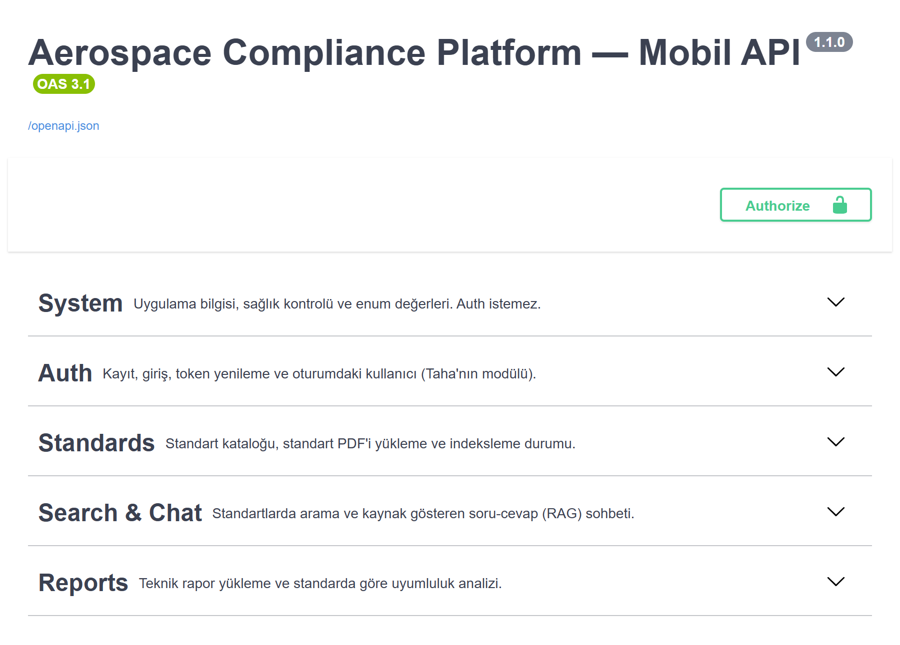
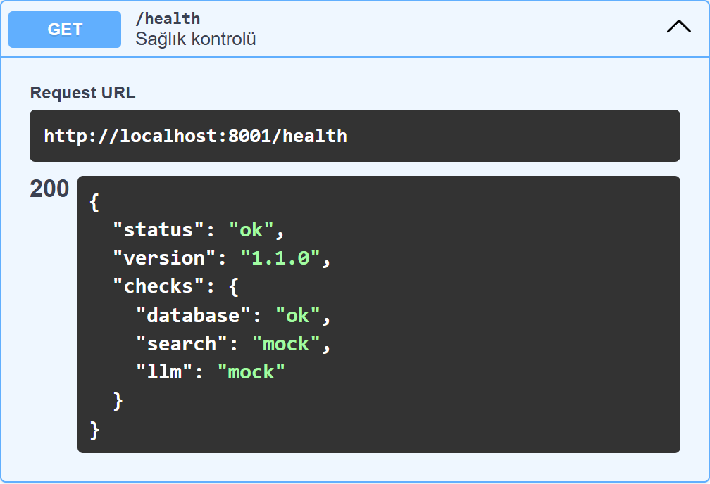
search: "mock" ve llm: "mock" hangi parçaların takılı olduğunu gösterir.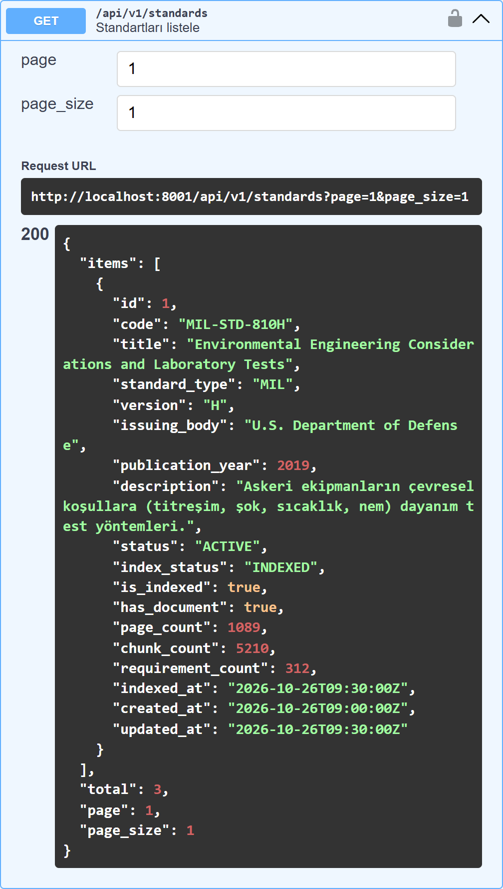
items kayıtlar, total
toplam sayı. Uygulama örnek standartlarla dolu başlar.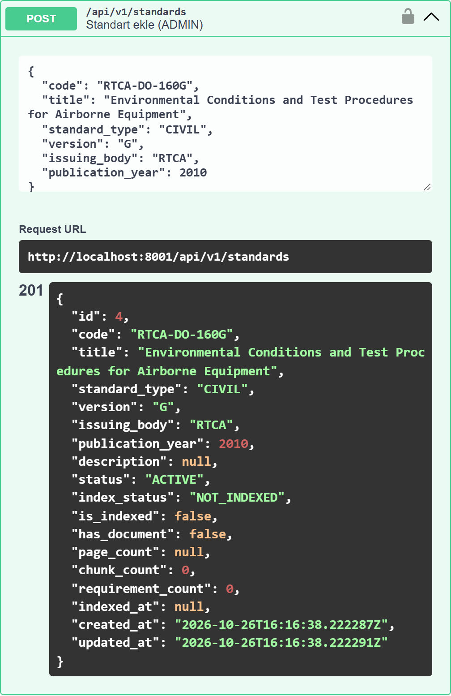
NOT_INDEXED.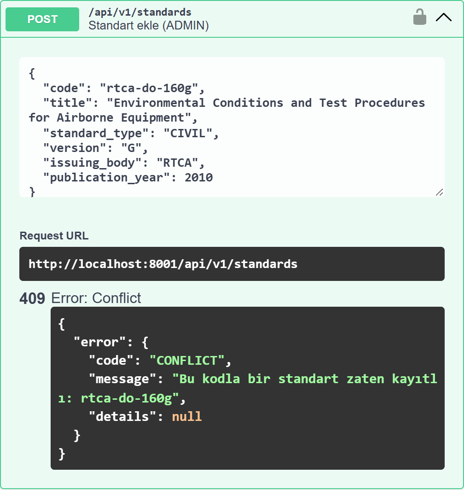
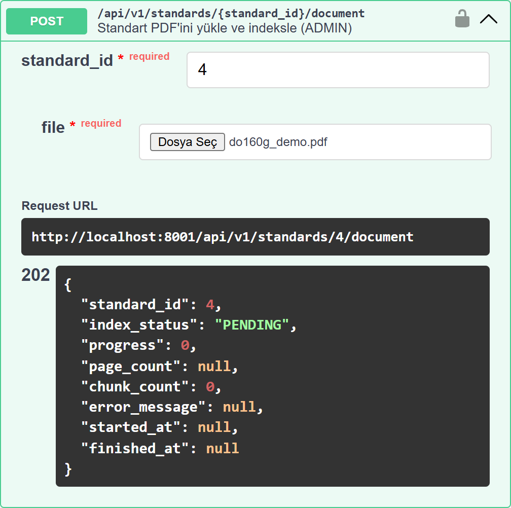
PENDING
döndü; indeksleme arka planda yapılıyor, telefon beklemiyor.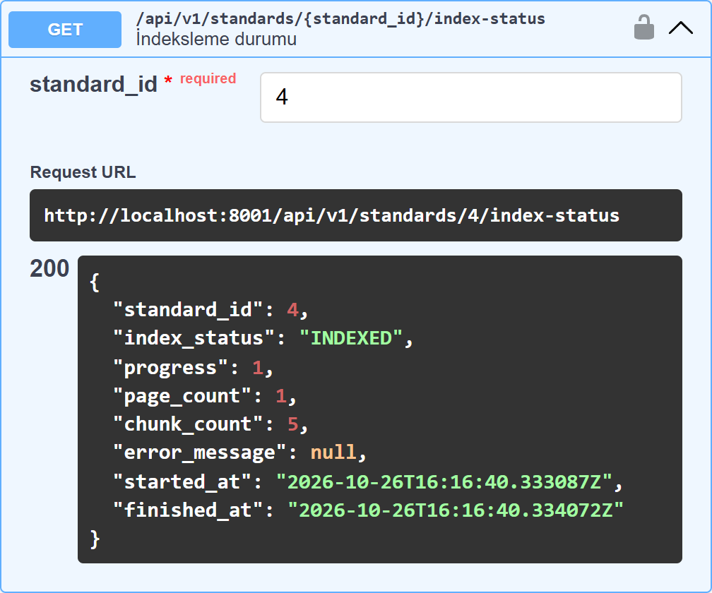
INDEXED; sayfa ve parça
sayıları doldu. Mobil bu adresi INDEXED olana kadar yoklar.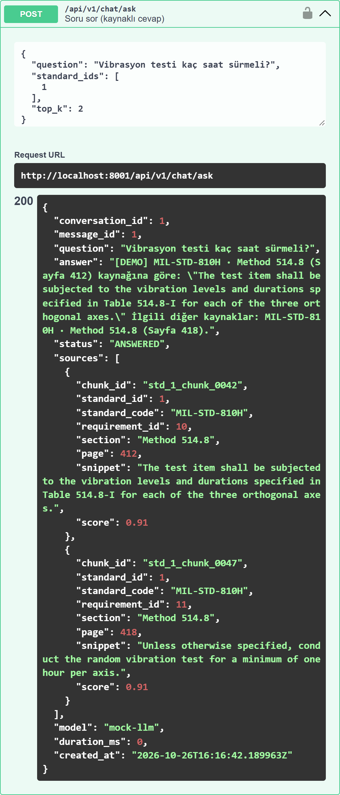
[DEMO] ile başlıyor (sahte yapay zekâ) ve
MIL-STD-810H · Method 514.8 · Sayfa 412 kaynağını gösteriyor. Gerçek arama ve Gemini takılınca biçim aynı kalacak.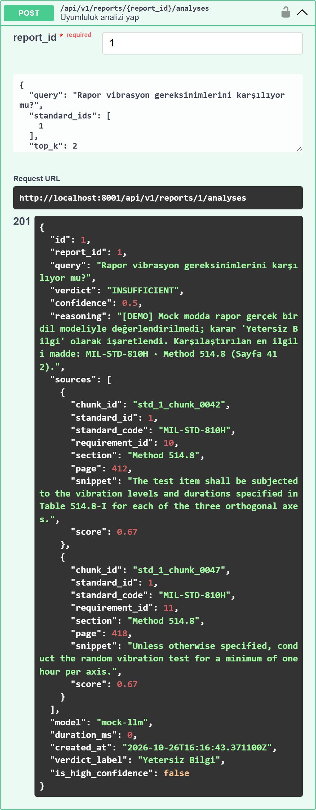
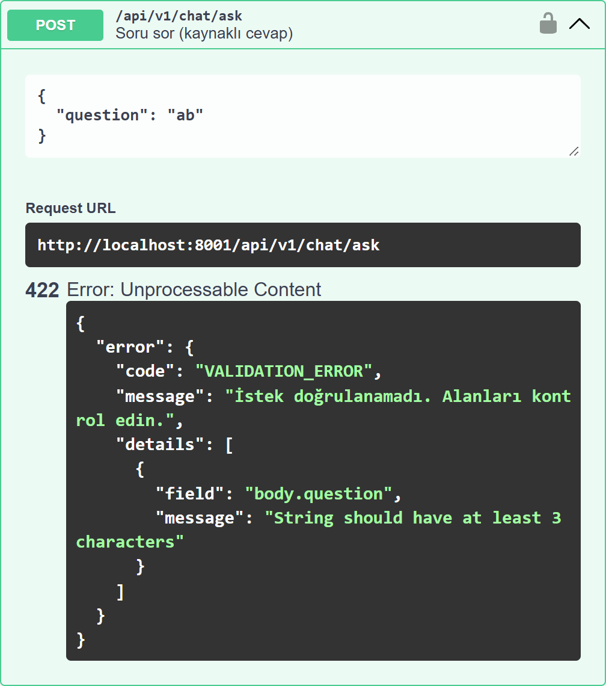
details hangi alanın (body.question) neden hatalı olduğunu söylüyor. Üst mesaj
Türkçedir; alan açıklaması doğrulama kütüphanesinden İngilizce gelir (mobil kullanıcıya message gösterilir).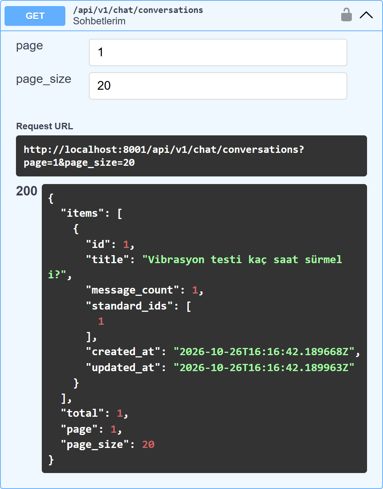
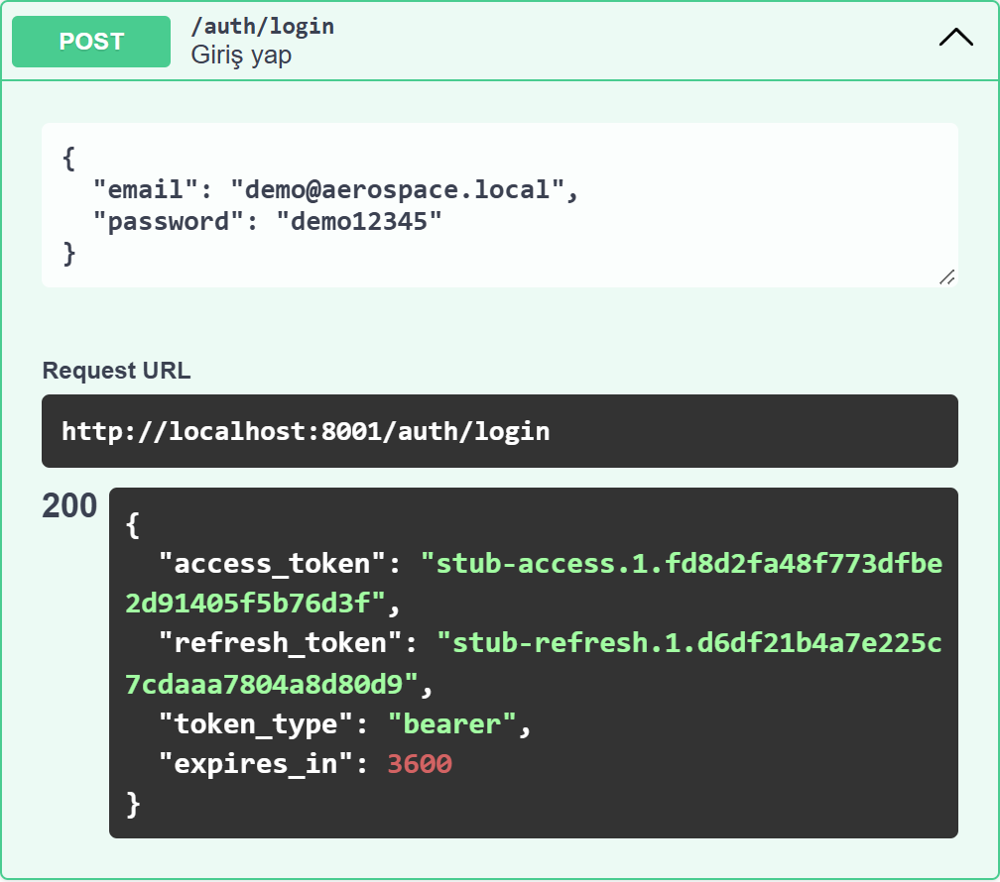
docs/API_CONTRACT.md dosyasına yazıldı, kod ona göre yapıldı. Mobil ekip
ile backend aynı belgeden çalışıyor.| Bulunan hata | Neden önemliydi? | Durum |
|---|---|---|
Sadece boşluktan oluşan standart kodu (" ") kabul ediliyordu | Katalogda adı boş bir kayıt oluşuyordu | Düzeltildi → 422 |
| "TİTREŞİM" araması "Titreşim"i bulmuyordu | Türkçe İ/ı harfleri; mobil kullanıcı büyük harfle arayabilir | Düzeltildi |
| Sohbete var olmayan standart numarası yazılıyordu | Geçmişte tutarsız veri | Düzeltildi |
Dosya yükleme kodu git'e eklenmiyordu (.gitignore kuralı) | Projeyi indiren uygulamayı çalıştıramazdı | Commit öncesi yakalandı |
Eski projeden öğrendiklerimiz: Önceki sürümde analiz uç noktası her zaman hata (500) dönüyordu, hata durumları kayboluyordu, dosya adları doğrudan diske yazılıyordu. Yeni iskelette bunların her biri için bir kural ve test var.
| Nereden? | Adres |
|---|---|
| Sunucunun çalıştığı bilgisayar | http://localhost:8000/docs |
| Aynı Wi-Fi'daki başka bilgisayar / telefon | http://<bilgisayarın IP'si>:8000 (ör. 192.168.1.100; ipconfig ile bulunur) |
| Android emülatör (aynı bilgisayarda) | http://10.0.2.2:8000 |
Sunucuyu başlatma:
.venv\Scripts\python -m uvicorn main:app --reload --host 0.0.0.0 --port 8000
(--host 0.0.0.0 başka cihazların bağlanabilmesi için; Windows güvenlik duvarında "Özel ağ" izni verilmeli.)
demo@aerospace.local / demo12345.GET /api/v1/meta/enums'tan alınmalı./openapi.json dosyasından mobil için istemci kodu otomatik üretilebilir.| Sıra | Kim | Ne |
|---|---|---|
| 1 | Taha | Gerçek JWT; auth uçlarını /api/v1/auth altına alma |
| 2 | Doruk | Bellek-içi depolar yerine PostgreSQL |
| 3 | Sudenur | Madde bazlı parçalama ve hibrit arama (SearchService) |
| 4 | Onur | Gerçek standart PDF'leri, web sohbet ekranının /chat/ask'e bağlanması |
| 5 | Şeyma, Ammar | Giriş/kayıt ve sohbet ekranlarının Swagger'daki formatla bağlanması |
| 6 | Kağan | Kalan 12 endpoint (güncelleme, silme, PDF görüntüleme, analiz geçmişi) |
| Terim | Bir cümlede |
|---|---|
| API | Bir programın diğer programlara sunduğu tanımlı istek noktalarının tamamı |
| Endpoint | Tek bir istek noktası: yöntem + adres (ör. GET /health) |
| Swagger / OpenAPI | API'nin otomatik, tıklanabilir kullanım kılavuzu |
| Şema | Gelen/giden verinin şablonu (hangi alan, hangi tip, hangi sınır) |
| Mock | Gerçeğinin yerine geçici takılan sahte parça |
| Arayüz (interface) | Bir bileşenin sağlaması gereken metotların tanımı; implementasyonu değiştirilebilir |
| RAG | Önce ilgili belge parçalarını bulup sonra onlara dayanarak cevap üretme |
| Token / JWT | Girişten sonra sunucunun verdiği ve her istekte gönderilen imzalı kimlik bilgisi |
| HTTP durum kodu | Cevabın sonucu: 200 tamam, 201 oluşturuldu, 202 alındı, 404 yok, 422 hatalı istek |